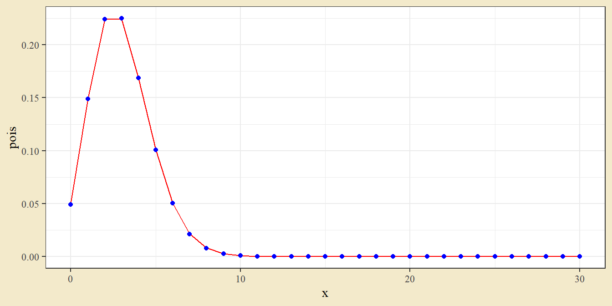

Kapitel 7 Ett stickprov
7.1 Normalfördelad data (eller stora stickprov)
Om man har normalfördelad data och vill testa om datans medelvärde är skilt från något hypotetiskt värde \(\mu_0\) kan man använda ett t-test för ett stickprov. Testets hypoteser ges i det tvåsidiga fallet av
\[H_0: \mu = \mu_0 \qquad H_1: \mu \neq \mu_0.\]
Testet kan beräknas genom att beräkna testvärdet
\[t = \frac{\bar x - \mu_0}{s / \sqrt n}\]
och beräkna ett p-värde som sannolikheten i svansarna bortom det t-värdet, i en t-fördelning med \(n-1\) frihetsgrader.
Som exempel ges följande data på 8 observationer av havreskörd.
| 49.8 | 58.4 | 49.4 | 57.1 |
| 52.2 | 49.1 | 44.6 | 55.4 |
Man vill testa om skörden är skild från 50, så hypoteser ges av
\[H_0: \mu = 50 \qquad H_1: \mu \neq 50.\]
Innan man utför testet kan det vara bra att ta en titt på datan och bilda en första uppfattning om nollhypotesens rimlighet. Man kan rita varje observation som en punkt i ett punktdiagram. Om det kan finnas överlappande punkter kan geom_dotplot eller geom_count användas för att separera eller notera överlappningar.
dat <- c(49.8, 58.4, 49.4, 57.1, 52.2, 49.1, 44.6, 55.4)
dat_t <- tibble(x = dat)
ggplot(dat_t, aes(x, y = 0)) +
geom_point(size = 4) +
annotate("point", x = 50, y = -1, col = "red", size = 4) +
ylim(-2,1) + xlab("Havreskörd") +
theme(axis.text.y = element_blank(),
axis.ticks.y = element_blank(),
axis.title.y = element_blank())
Det skattade medelvärdet är \(\bar x = 52.0\) och standardavvikelsen \(s = 4.68\). Teststorheten kan beräknas till
\[t = \frac{52 - 50}{4.68 / \sqrt 8} = 1.209\]
Testen kan genomföras i R med funktionen t.test.
dat <- c(49.8, 58.4, 49.4, 57.1, 52.2, 49.1, 44.6, 55.4)
t.test(dat, mu = 50)##
## One Sample t-test
##
## data: dat
## t = 1.2086, df = 7, p-value = 0.266
## alternative hypothesis: true mean is not equal to 50
## 95 percent confidence interval:
## 48.08713 55.91287
## sample estimates:
## mean of x
## 52I funktionen anges datan dat och nollhypotesens värde mu = 50. Utskriften ger t-värdet till \(1.2086\) och p-värdet till \(0.266\). Det höga p-värdet ger att man inte förkastar nollhypotesen. Beräkningen av p-värdet kan illustreras med en t-fördelning.
test_results <- t.test(dat, mu = 50)
dat_t <- tibble(x = seq(-4, 4, 0.01),
y = dt(x, 7))
ggplot(dat_t, aes(x, y)) +
geom_line() +
geom_ribbon(aes(ymax = y, ymin = 0), fill = "red3",
data = dat_t %>% filter(x < -test_results$statistic)) +
geom_ribbon(aes(ymax = y, ymin = 0), fill = "red3",
data = dat_t %>% filter(x > test_results$statistic))
Notera hur man kan spara utfallet av t.test och sedan använda resultat direkt ur det objektet (här genom test_restults$statistic som ger teststorheten, men även test_results$p.value kan vara användbart). Testobjektets namn kan förstås vara något helt annat än test_results.
Den röda arean i svansarna motsvarar p-värdet \(0.266\). Sannolikheten att få den observerade skillnaden mellan skattat medelvärde och nollhypotesens värde (52 respektive 50) även om det inte finns någon verklig skillnad är alltså ungefär en på fyra.
Utskriften från t.test ger också ett 95-procentigt konfidensintervall: \((48.09, 55.91)\). Tolkningen är att det sanna populationsmedelvärdet ligger i intervallet med 95 procents konfidens. Notera att nollhypotesens värde 50 ligger i intervallet.
7.2 Binär data. Proportioner
En skattad proportion kan ställas mot en nollhypotes genom ett binomialtest eller z-test. Ta som exempel att man samlar data om antal infekterade plantor i ett slumpmässigt urval av 50 och finner att 17 är infekterade. Man kan då testa nollhypotesen att den sanna populationsproportionen är 0.5,
\[H_0: p = 0.5 \qquad H_1: p \neq 0.5.\]
I R kan ett binomialtest utföras med binom.test och ett z-test (som bygger på en normalapproximation av binomialfördelningen) med prop.test. Det senare kan antingen utföras med eller utan en kontinuitetskorrektion. Det test som beräknas för hand är oftast utan korrektionen.
binom.test(17, 50, p = 0.5)##
## Exact binomial test
##
## data: 17 and 50
## number of successes = 17, number of trials = 50, p-value = 0.03284
## alternative hypothesis: true probability of success is not equal to 0.5
## 95 percent confidence interval:
## 0.2120547 0.4876525
## sample estimates:
## probability of success
## 0.34prop.test(17, 50, p = 0.5, correct = F)##
## 1-sample proportions test without continuity correction
##
## data: 17 out of 50, null probability 0.5
## X-squared = 5.12, df = 1, p-value = 0.02365
## alternative hypothesis: true p is not equal to 0.5
## 95 percent confidence interval:
## 0.2243695 0.4784617
## sample estimates:
## p
## 0.34prop.test(17, 50, p = 0.5, correct = T)##
## 1-sample proportions test with continuity correction
##
## data: 17 out of 50, null probability 0.5
## X-squared = 4.5, df = 1, p-value = 0.03389
## alternative hypothesis: true p is not equal to 0.5
## 95 percent confidence interval:
## 0.2159464 0.4885541
## sample estimates:
## p
## 0.34Funktionernas argument är antal postiva utfall, det totala antalet utfall, och nollhypotesens värde. För prop.test anger argumentet correct om en korrektion ska utföras eller ej.
De tre testen ger liknande resultat, med p-värden kring 3 procent. Ett test på femprocentsnivån skulle alltså ge att nollhypotesen förkastas.
Utskrifterna ger också konfidensintervall, och precis som p-värden beror intervallet på fördelning och kontinuitetskorrektion. Tolkningen av intervallet är detsamma som i fallet med kontinuerlig data - den sanna populationsproportionen ligger i intervallet med 95 procents konfidens - men den exakta konstruktionen varierar beroende på detaljer i antaganden. För ett konfidensintervall som motsvarar det man vanligen beräknar för hand kan man använda binomial-paketet och funktionen binom.confint.
library(binom)
binom.confint(17, 50, methods = "asymp")## method x n mean lower upper
## 1 asymptotic 17 50 0.34 0.208697 0.471303Det interval som ges är kan beräknas genom att sätta \(\hat p = 17/50\) i uttrycket
\[\hat p \pm 1.96 \sqrt{\frac{\hat p (1 - \hat p)}{50}},\]
med ett litet avrundningsfel eftersom \(1.96\) är avrundat.
7.3 Nominal eller ordinal data. Goodness-of-fit
Goodness-of-fit-test testar fördelningen i insamlad data med en hypotetiskt fördelning. Teststorheten ges av
\[\chi^2 = \sum \frac{(O-E)^2}{E}\]
där summan går över alla utfall i fördelning, \(O\) är det observerade antalet i klassen och \(E\) är det förväntade antalet enligt den hypotetiska fördelningen. Under nollhypotesen följer teststorheten en \(\chi^2\)-fördelning.
Som exempel ges följande data på fågelobservationer.
| Art | Antal |
|---|---|
| Ladusvala | 237 |
| Hussvala | 220 |
| Backsvala | 143 |
Totalt har man observerat 600 fåglar. Från tidigare års studier tror man att Ladusvalor och Hussvalor är lika vanliga, medan Backsvalar förekommer hälften så ofta - proportionerna skulle alltså vara 0.4, 0.4 respektive 0.2. Detta kan illustreras med ett stapeldiagram, med den hypotetiska fördelningen som punkter.
dat <- tibble(Art = c("Ladusvala", "Hussvala", "Backsvala"),
Antal = c(237, 220, 143))
ggplot(dat, aes(Art, Antal)) +
geom_bar(stat = "identity") +
geom_point(aes(y = c(0.4, 0.4, 0.2) * 600), size = 6)
Grafen visar att hussvalor förekommer något mer sällan än väntat, medan backsvalor förekommer någon oftare.
För att genomföra testet i R används chisq.test. Funktionens ingångsvärden är den observerade datan och de teoretiska andelarna.
chisq.test(dat$Antal, p = c(0.4, 0.4, 0.2))##
## Chi-squared test for given probabilities
##
## data: dat$Antal
## X-squared = 6.1125, df = 2, p-value = 0.04706Utskriften ger teststorheten \(\chi^2 = 6.1125\) och p-värdet \(0.04706\). I detta fall är p-värdet strax under fem procent - man skulle alltså förkasta nollhypotesen på signifikansnivån fem procent.
Utskriften ger också antalet frihetsgrader till två. I det här fallet ges den hypotetiska fördelningen av antagna sannolikheter, antalet frihetsgrader ges därför av antalet klasser minus ett. Men man kan också använda goodness-of-fit-test för att testa om data följer en viss typfördelning vars parameter beror på värden i data. Ett typiskt exempel på detta är test om data följer en poissonfördelning där man använder datan för att skatta \(\lambda\)-parametern i fördelningen. Antal frihetsgrader blir i sådana fall antalet klasser, minus antalet skattade parametrar, minus ett. Funktionen chisq.test kommer då ge fel antal frihetsgrader - p-värdet kan istället beräknas genom pchisq.
Ta som exempel följande frekvenstabell, beräknad från 500 observationer av en diskret variabel.
dat <- tibble(Utfall = 0:7,
Frekvens = c(21,76,125,107,79,54,23,15))
kable(dat)| Utfall | Frekvens |
|---|---|
| 0 | 21 |
| 1 | 76 |
| 2 | 125 |
| 3 | 107 |
| 4 | 79 |
| 5 | 54 |
| 6 | 23 |
| 7 | 15 |
Målet är att testa om datan följer en poissonfördelning. För att beräkna sannolikheter från en poissonfördelning behövs en skattning av parametern \(\lambda\). Detta ges av medelvärdet av de 600 observationerna, vilket kan beräknas genom att multiplicera utfallet med frekvensen, summera, och dela på 600.
lambda <- sum(dat$Utfall * dat$Frekvens) / 500
lambda## [1] 2.952Skattningen på \(\lambda\) är \(2.952\). Nästa steg är att beräkna sannolikheter från en poissonfördelning med det parametervärdet. För att sannolikheterna ska summera till ett justeras sannolikheten för det avslutande utfallet 7.
dat$Sannolikheter <- dpois(0:7, lambda)
dat$Sannolikheter[8] <- 1 - ppois(6, lambda)
sum(dat$Sannolikheter)## [1] 1Data och nollhypotes kan illustreras med ett stapeldiagram där punkter anger förväntade värden från nollhypotesen.
ggplot(dat, aes(Utfall, Frekvens)) +
geom_bar(stat = "identity") +
geom_point(aes(y = Sannolikheter * 500))
Data och nollhypotes verkar stämma ganska väl. Funktionen chisq.test kan användas för att beräkna teststorheten, men observera att antalet frihetsgrader nu blir fel - datan har åtta klasser, och då en parameter skattas i beräkningen av förväntade antal bör testet genomföras med \(8-1-1=6\) frihetsgrader. För att korrigera kan man ta fram teststorheten och beräkna p-värdet ur den korrekta fördelningen.
chisq.test(dat$Frekvens, p = dat$Sannolikheter)##
## Chi-squared test for given probabilities
##
## data: dat$Frekvens
## X-squared = 3.122, df = 7, p-value = 0.8735test_result <- chisq.test(dat$Frekvens, p = dat$Sannolikheter)
1 - pchisq(test_result$statistic, df = 6)## X-squared
## 0.7933799I ett \(\chi^2\)-test är p-värdet sannolikheten i svansen till höger om teststorheten. Eftersom pchisq-funktionen beräknar sannolikheten till vänster, kan man ta komplementet genom att dra ifrån sannolikheten från ett.
7.4 Övningar
Övning 7.1 (Smältpunkt) Någon mäter smältpunkter för legeringar av metall och får följande värden.
| 1054.8 | 1052.9 | 1051.0 | 1049.8 | 1051.6 |
| 1047.9 | 1051.8 | 1048.5 | 1050.2 | 1050.7 |
a. Beräkna ett 95-procentigt konfidensintervall för medelvärdet.
b. Genomför ett hypotestest för att testa om medelsmältpunkten är 1050 grader.
Lösningsförslag 7.1 (Smältpunkt) Datan kan importeras från excelfilen med uppgiftsdata.
dat <- readxl::read_excel("Data/Uppgiftsdata.xlsx", sheet = "Smältpunkt")
ggplot(dat, aes(Smältpunkt, 0)) +
geom_point() +
annotate("point", x = 1050, y = -0.1, col = "red") +
ylim(-0.2,0.1)
t.test(dat$Smältpunkt, mu = 1050)##
## One Sample t-test
##
## data: dat$Smältpunkt
## t = 1.4345, df = 9, p-value = 0.1852
## alternative hypothesis: true mean is not equal to 1050
## 95 percent confidence interval:
## 1049.469 1052.371
## sample estimates:
## mean of x
## 1050.92I bilden är varje svart punkt en observation och den röda punkten är nollhypotesens värde.
Testet ger ett högt p-värde, vilket tyder på att nollhypotesen inte bör förkastar. Ett 95-procentigt konfidensintervall ges av \((1047.08, 1052.76)\). Notera att det täcker nollhypotesens värde på 1050.
Övning 7.2 (Väderstation Falsterbo. Test och konfidensintervall) Bland kursdatan finns en fil med temperaturmätningar från Falsterbo. Datan kan läsas in med följande kod.
dat <- read_csv2("Data/smhi-opendata_1_52230_20210912_114534.csv", skip = 9) %>%
mutate(Lufttemperatur = as.numeric(Lufttemperatur))Medeltemperatur 2000-2009 ges av följande tabell.
dat_temp <- dat %>%
mutate(År = lubridate::year(Datum)) %>%
filter(År %in% 2000:2009) %>%
group_by(År) %>%
summarise(Medeltemperatur = mean(Lufttemperatur)) %>%
mutate(Medeltemperatur = round(Medeltemperatur, 2))
dat_tempkable(dat_temp)| År | Medeltemperatur |
|---|---|
| 2000 | 9.72 |
| 2001 | 8.98 |
| 2002 | 9.51 |
| 2003 | 8.89 |
| 2004 | 8.92 |
| 2005 | 9.01 |
| 2006 | 9.63 |
| 2007 | 9.80 |
| 2008 | 9.81 |
| 2009 | 9.17 |
Medelvärde och standardavvikelsen ges av följande.
mean(dat_temp$Medeltemperatur)## [1] 9.344sd(dat_temp$Medeltemperatur)## [1] 0.3852907a. Konstruera och tolka ett 95-procentigt konfidensintervall för medeltemperaturen under perioden.
b. Mätningarna från 1900-1949 ger en medeltemperatur på 8.42. Genomför ett passande t-test för att se om mätningarna från 2000-talet skiljer sig i medelvärde.
c. Titta på antalet mätningar per dag. Diskutera möjlig påverkan på testet i (b).
Lösningsförslag 7.2 (Väderstation Falsterbo. Test och konfidensintervall) a. Konfidensvallet kan tas fram med t.test. Den aggregerade datan med årsmedelvärden sparades tidigare som dat_temp.
t.test(dat_temp$Medeltemperatur)##
## One Sample t-test
##
## data: dat_temp$Medeltemperatur
## t = 76.691, df = 9, p-value = 5.514e-14
## alternative hypothesis: true mean is not equal to 0
## 95 percent confidence interval:
## 9.06838 9.61962
## sample estimates:
## mean of x
## 9.344Intervallet ges av \((9.06, 9.62)\). Populationsmedelvärdet för 2000-2009 ligger med 95-procents konfidens i det intervallet.
b. Funktionen t.test kan användas med nollhypotesens värde angivet med argumentet mu. Nollhypotesen är att populationsmedelvärdet \(\mu\) är 8.42.
t.test(dat_temp$Medeltemperatur, mu = 8.42)##
## One Sample t-test
##
## data: dat_temp$Medeltemperatur
## t = 7.5837, df = 9, p-value = 3.383e-05
## alternative hypothesis: true mean is not equal to 8.42
## 95 percent confidence interval:
## 9.06838 9.61962
## sample estimates:
## mean of x
## 9.344Det låga p-värdet ger att nollhypotesen förkastas, vilket tyder på att medeltemperaturen 2000-2009 är skild från 8.42.
c. Man kan räkna antal observationer per dag med count och göra en linjegraf med ggplot och geom_line.
dat %>% count(Datum) %>% ggplot(aes(Datum, n)) + geom_line()
Antal observationer per dag är inte konstant. Om vissa dagar är uppmätta vid tider på dygnet då det är kallare eller varmare kan det ge en skevhet i mätningarna, vilket gör att jämförelsen mellan olika tider inte är rättvis. En lösning skulle kunna vara att ta värdet en viss tid på dygnet, en tid då det finns observationer för samtliga dagar. Det finns förstås också andra möjliga felkällor som påverkar en jämförelse över tid, t.ex. ändrade mätinstrument, små positionsförändringar, förändringar i kringliggande bebyggelse).
Övning 7.3 (Äppelträd) I en undersökning av insektsskador på äppelträd har 6 plantor blivit vägda före och efter insektsdödande behandling. Syftet är att undersöka om behandlingen leder till förändrad vikt. Resultatet ges av följande tabell.
| Träd | Före | Efter | Diff |
|---|---|---|---|
| A | 271.1 | 311.2 | 40.1 |
| B | 307.9 | 285.4 | -22.5 |
| C | 305.9 | 320.9 | 15.0 |
| D | 302.6 | 353.5 | 50.9 |
| E | 263.4 | 358.0 | 94.6 |
| F | 277.7 | 286.1 | 8.4 |
a. Gör ett test för att se om medelvärdet före behandling är skilt från 310.
b. Beräkna ett konfidensintervall för skillnaden i populationsmedelvärden.
Lösningsförslag 7.3 (Äppelträd) Datan importeras från excelfilen med uppgiftsdata. Datan ändras till långform genom pivot_longer och plottas med ggplot.
dat <- readxl::read_excel("Data/Uppgiftsdata.xlsx", sheet = "Äppelträd")
dat %>%
pivot_longer(-Träd) %>%
ggplot(aes(name, value, group = Träd)) +
geom_point() +
geom_line()
a.
t.test(dat$Före, mu = 310)##
## One Sample t-test
##
## data: dat$Före
## t = -2.733, df = 5, p-value = 0.04113
## alternative hypothesis: true mean is not equal to 310
## 95 percent confidence interval:
## 267.5012 308.6988
## sample estimates:
## mean of x
## 288.1Testet ger ett p-värde på \(0.041\). Nollhypotesen förkastas på femprocentsnivån men ej på enprocentsnivån.
b.
t.test(dat$Före, dat$Efter, paired = T)##
## Paired t-test
##
## data: dat$Före and dat$Efter
## t = -1.8855, df = 5, p-value = 0.118
## alternative hypothesis: true mean difference is not equal to 0
## 95 percent confidence interval:
## -73.45961 11.29295
## sample estimates:
## mean difference
## -31.08333Konfidensintervallet ges av \((-73.46, 11.29)\). Den sanna behandlingsskillnaden ligger med 95 procents konfidens i det intervallet.
Övning 7.4 (Simulering, hypotestest) Slumptal kan användas för att undersöka hypotestestens egenskaper. Skriv en funktion som genererar 100 slumptal från en normalfördelning med populationsmedelvärdet 0, testar mot nollhypotesen \(\mu_0 = 0\) i ett t-test, och ger ut p-värdet från det testet. Generera 10000 körningar av funktionen och illustrera p-värdena med ett histogram.
Upprepa samma procedur men dra denna gång slumptal från en normalfördelning med populationsmedelvärdet 0.1 (använs samma nollhypotes som tidigare \(\mu_0 = 0\)). Hur stor andel av de 10000 simuleringarna resulterar i ett p-värde under 0.05?
Lösningsförslag 7.4 (Simulering hypotestest) Här konstrueras en funktion som drar hundra slumpvärden, testar om medelvärdet är skilt från noll, och ger ut p-värdet från testet. Funktionen replikeras 10000 gånger och de resulterande p-värdena illustreras med ett histogram.
p_values_when_mean_0 <- function(){
x <- rnorm(100, mean = 0)
test <- t.test(x, mu = 0)
test$p.value
}
p_values <- replicate(10000, p_values_when_mean_0())
dat <- tibble(p_values)
ggplot(dat, aes(p_values)) +
geom_histogram(breaks = seq(0, 1, 0.1))
mean(p_values < 0.05)## [1] 0.0489När slumptalen genereras från en normalfördelning med medelvärde 0 följer p-värdena en likformig fördelning. Ganska exakt 5 procent av simuleringarna ger ett p-värde under 5 procent. Detta är simuleringar i situationen att nollhypotesen är sann - sannolikheten att felaktigt förkasta på femprocentsnivån när nollhypotesen stämmer är alltså fem procent. Detta är alltså risken för falska positiva resultat.
p_values_when_mean_0 <- function(){
x <- rnorm(100, mean = 0.1)
test <- t.test(x, mu = 0)
test$p.value
}
p_values <- replicate(10000, p_values_when_mean_0())
dat <- tibble(p_values)
ggplot(dat, aes(p_values)) +
geom_histogram(breaks = seq(0, 1, 0.05))
mean(p_values < 0.05)## [1] 0.1633När slumptalen istället genereras från en normalfördelning med medelvärde 0.1 följer p-värdena en avtagande kurva men högst sannolikheter kring noll. Runt 16 procent av simuleringarna har givit p-värden under 0.05 - man har alltså en större chans att korrekt förkasta nollhypotesen när den inte stämmer. Notera att man ändå har ganska låg sannolikhet att förkasta nollhypotesen.
Övning 7.5 (Guldfiskgenetik) En teori inom genetik förutsäger att tre fjärdedelar i en grupp guldfiskar ska ha genomskinliga fjäll. Observationer ger att nittio av hundra har genomskinliga fjäll. Genomför ett test för att se om den faktiska proportionen skiljer sig från 0.75.
(Fråga från Olsson, Biometri)
Lösningsförslag 7.5 (Guldfiskgenetik) Frågan kan hanteras med ett \(\chi^2\)-test, ett z-test eller ett binomialtest. Här ges exempel på det första. Nollhypotesen är att sannolikheten för genomskinliga fjäll är tre fjärdedelar. Notera att funktionen anges både med antalet (och andelen under nollhypotesen) med genomskinliga fjäll och antalet med färglagda fjäll.
chisq.test(c(90, 10), p = c(0.75, 0.25))##
## Chi-squared test for given probabilities
##
## data: c(90, 10)
## X-squared = 12, df = 1, p-value = 0.000532Det låga p-värdet tyder på att den sanna sannolikheten för genomskinliga fjäll inte är 0.75.
Övning 7.6 (Mer guldfiskgenetik) En konkurrerande teori inom genetik förutsäger att femton sextondelar (proportionen 0.9375) ska ha genomskinliga fjäll. Observationer ger att nittio av hundra har genomskinliga fjäll. Genomför ett test för att se om proportionen skiljer sig från 0.9375.
Lösningsförslag 7.6 (Mer guldfiskgenetik) Frågan kan hanteras med ett \(\chi^2\)-test. Nollhypotesen är att sannolikheten är genomskinliga fjäll är femton sextondelar.
chisq.test(c(90, 10), p = c(15/16, 1/16))##
## Chi-squared test for given probabilities
##
## data: c(90, 10)
## X-squared = 2.4, df = 1, p-value = 0.1213Nollhypotesen att sannolikheten för genomskinliga fjäll är femton sextondelar, \(p = 15/16\), kan ej förkastas, eftersom testet ger ett p-värde över de vanliga signifikansnivåerna.
Övning 7.7 (Artobservationer) Ekologisk data på populationsstorlekar kan samlas in genom att en observatör följer en rak slinga (en transekt) i ett naturområde och räknar antalet observerade individer. I en transektundersökning av storlom utförs 200 observationer med resultat nedan. Data finns tillgänglig bland kursdatan.
| Antal observerade | n |
|---|---|
| 0 | 25 |
| 1 | 53 |
| 2 | 51 |
| 3 | 36 |
| 4 | 17 |
| 5 | 18 |
Observerade anger antalet observerade individer och n anger antalet transekter med det utfallet. Från tidigare studier förväntar man sig 1.7 observationer per transektgång. Genomför ett goodness-of-fit-test för att undersöka om antalet observerade individer följer en poissonfördelning med \(\lambda = 1.7\).
Lösningsförslag 7.7 (Artobservationer) Ett goodness-of-fit-test kan genomföras genom att först beräkna det förväntade antalet observationer om nollhypotesen stämmer, det vill säga om antalet observerade individer följer en poissonfördelning med \(\lambda = 1.7\). Förväntat antal beräknas genom att ta fram sannolikheterna för utfallet noll till 5 från poissonfördelning och multiplicera med 200. För att sannolikheterna ska summera till 1 sätts sannolikheten att observera fem individer till ett minus summan av sannolikheten att få färre än 5.
prob_poisson <- dpois(x = 0:5, lambda = 1.7)
prob_poisson[6] <- 1 - sum(prob_poisson[0:5])
expected_counts <- prob_poisson * 200Datan kan illusteras med ett stapeldiagram. Stapeln ger faktiska observationer medan punkten ger det förväntade antalet under nollhypotesen.
dat <- read_csv("Data/Transektdata Storlom.csv")
dat <- dat %>%
count(`Antal observerade`) %>%
mutate(`Sannolikheter enligt nollhypotes` = prob_poisson,
`Förväntat antal` = expected_counts)
ggplot(dat, aes(`Antal observerade`, n)) +
geom_bar(stat = "identity", width = 0.5,
fill = "white", color = "black") +
geom_point(aes(y = `Förväntat antal`), color = "red")
Observerade antal verkar inte perfekt följa nollhypotesens förväntade värden.
Ett formellt test genomförs som ett chi-två-test. Eftersom värdet på \(\lambda\) inte skattas från datan ges antalet frihetsgrader av antalet klasser minus ett. Testet genomförs i R med chisq.test.
chisq.test(dat$n, p = dat$`Sannolikheter enligt nollhypotes`)##
## Chi-squared test for given probabilities
##
## data: dat$n
## X-squared = 32.347, df = 5, p-value = 5.072e-06Det låga p-värdet ger att man förkastar nollhypotesen. Det finns en statistiskt säkerställd skillnad mellan den observerade fördelningen och en poissonfördelning med \(\lambda = 1.7\).
Övning 7.8 (Simulering konfidensintervall) Konfidensinterval konstrueras så att det sanna parametervärdet ingår i intervallet med en viss konfidensgrad (oftast 95 procent). Skriv en funktion som drar 10 slumptal från en normalfördelning med medelvärdet 9 och beräknar konfidensintervall. Upprepa funktionen 10000 gånger. Hur ofta täcker intervallet 9?
Notera att detta är en svårare uppgift.
Lösningsförslag 7.8 (Simulering konfidensintervall) Här konstrueras en funktion som drar 10 slumptal och beräknar ett konfidensintervall. Eftersom funktionen ger två värden (intervallets lägre och övre gräns) behövs lite mer hantering än i tidigare exempel (där de funktioner som använts givit ett utfallsvärde).
ci_from_ten <- function(){
x <- rnorm(10, mean = 9)
test <- t.test(x)
test$conf.int
}
intervals <- replicate(10000, ci_from_ten())
intervals <- t(intervals) # Transponera till kolumner
intervals <- as.data.frame(intervals)
names(intervals) <- c("Undre", "Övre")
mean(intervals$Undre > 9)## [1] 0.0266mean(intervals$Övre < 9)## [1] 0.0253Värdet 9 ligger under den övre gränsen ungefär 2.5 procent av gångerna och över den undre gränsen ungefär 2.5 gångerna. Intervallet täcker alltså 9 ungefär 95 procent av gångerna.
En illustration med 100 simulerade fall.
intervals <- replicate(100, ci_from_ten())
intervals <- t(intervals) # Transponera till kolumner
intervals <- as.data.frame(intervals)
names(intervals) <- c("Undre", "Övre")
intervals %>%
arrange(Undre + Övre) %>%
mutate(id = 1:n(),
Täcker_9 = Undre < 9 & Övre > 9) %>%
ggplot(aes(x = Undre, xend = Övre, y = id, yend = id, col = Täcker_9)) +
geom_segment() +
geom_point(aes(x = (Övre + Undre) / 2, id)) +
geom_vline(xintercept = 9) +
theme(legend.position = "none")
Varje streck motsvarar konfidensintervallet från en simulering. Intervallet väntas täcka 9 i 95 av hundra fall, men det kan förstås variera eftersom det beror på slumptalen.